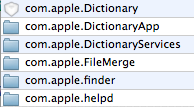
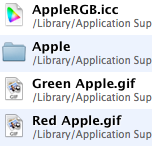
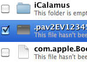
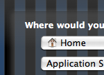
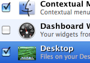

Discover Contents
Contents provide you with many easy-to-use features to keep your library organized and clean. Anything you ever had to do in your library, you can now do with Contents much faster.
Library Browser |
|
|  |
Just browse the library, see what items take up how much space, add, move, copy, enable and disable files around... Just select whether you want to browse the user or computer library, select the category and see what gems does your library hide. |
Library Searcher |
|
|  |
If browsing's too slow for you, how about searching? Just tell Contents to search for a certain string and you'll get all the files that match to your query. |
Preferences Cleaner |
|
|  |
Ever tried out an app and then threw it away? Preferences often get forgotten and build up in your preferences folder. Use this feature to track down preferences by old applications. |
Uninstaller |
|
|
Find and remove files related to an application just with one drag and one drop! |
|
Installer |
|
|  |
Ever downloaded anything that you had to manually put into your Library? Isn't it just easier to use Contents and let them install it with just one single click? |
Backupper |
|
|  |
Yes, TimeMachine is awesome. However, sometimes it's needed to back up just some files, for example your emails and restore them on another computer. That's what Contents' Backupper is for. |